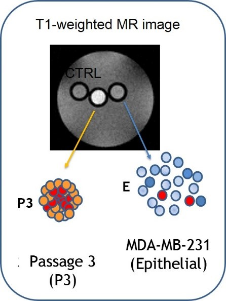

A growing body of evidence suggests that cancer stem cells (CSC)
have the unique biological properties necessary for tumor maintenance and spreading,
and function as a reservoir for the relapse and metastatic evolution of the disease
by virtue of their resistance to radio- and chemo-therapies.
Thus, the efficacy of a therapeutic approach relies on its ability to effectively target
and deplete CSC. In this study, we show that CSC-enriched tumorspheres from breast cancer cell
lines display an increased L-Ferritin uptake capability compared to their monolayer counterparts
as a consequence of the upregulation of the L-Ferritin receptor SCARA5.

L-Ferritin internalization was exploited for the simultaneous delivery of Curcumin,
a natural therapeutic molecule endowed with antineoplastic action, and the MRI contrast agent Gd-HPDO3A,
both entrapped in the L-Ferritin cavity. This theranostic system was able to impair viability and self-renewal
of tumorspheres in vitro and to induce the regression of established tumors in mice.
Conti L. et al, Oncotarget. 2016 Oct 11; 7(41): 66713–66727